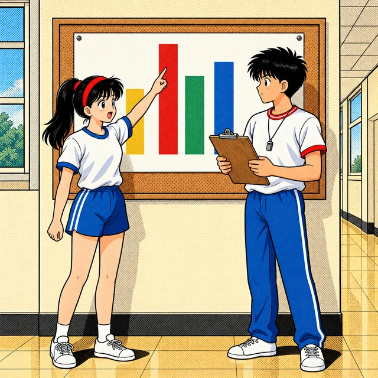
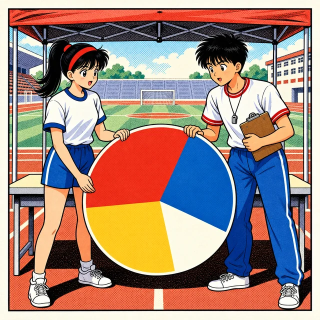
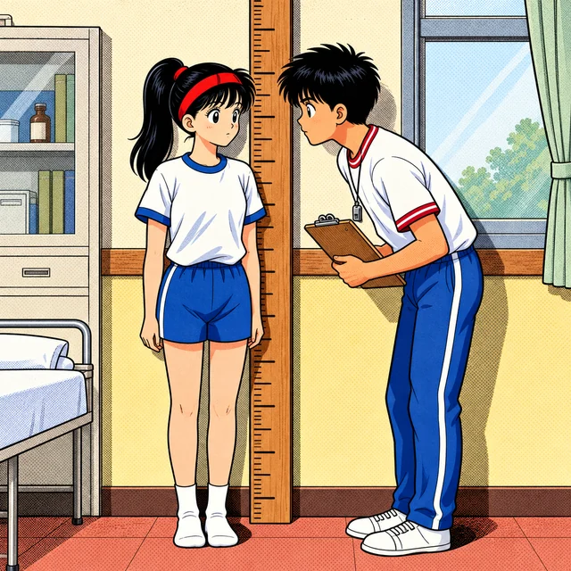
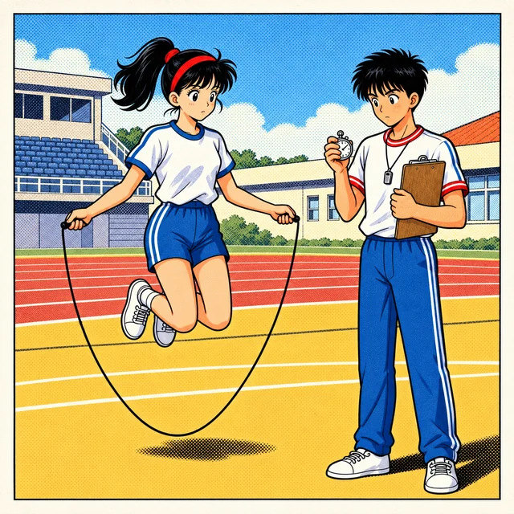

課前暖身漫畫：比平均少，就是最差的嗎？
體育課投籃測驗，小葵這一組 \(5\) 個人各投 \(10\) 球。記錄的大志宣布：「平均進 \(5\) 球！」只進 \(4\) 球的小葵垂頭喪氣：比平均少，是不是全組最差？大志看了看記錄板上的 \(3, 4, 4, 4, 10\)——咦，明明有 \(3\) 個人都進 \(4\) 球。平均數真的能代表這一組嗎？這一節學完三個代表值，再回來回答。
重點 1：長條圖與折線圖——看資料選圖，再報讀
重點整理與敘述
- 長條圖：用長條的高度表示每一個類別的數量，長條之間分開。類別可以沒有先後順序，例如運動項目、上學方式。
- 折線圖：把各點依序用線段連起來，適合看資料隨時間的變化趨勢：線往上是增加、往下是減少。
- 報讀的順序：先看兩軸各代表什麼、單位是什麼，再讀出最多、最少、相差多少。
- 省略記號：縱軸不從 \(0\) 畫起時，可以在底部畫一段折線表示省略。這樣畫高度就不再和數量成正比，要看刻度上的數字，不能只比高度。
| 統計圖 | 使用時機 | 例子 |
|---|---|---|
| 長條圖 | 比較各類別的數量 | 各社團的人數 |
| 折線圖 | 看數量隨時間的變化 | 一年中每個月的雨量 |

視覺互動探索：記分板選圖台
切換資料與圖的種類，看哪一種畫法適合；在圖上點選兩個項目比較相差多少，再試試把縱軸「省略下半段」，看高度會怎麼騙人：
形成性評量 (長條圖與折線圖)
Q1. 下列哪一份資料最適合用折線圖呈現？
解析：答案為 B。月分有先後順序，把每個月的氣溫連起來，看得出天氣是變熱還是變冷，這是折線圖擅長的變化趨勢。
A、C、D 錯：水果、社團、飲料都是一個一個的類別，彼此沒有先後順序，連起來的線沒有意義，用長條圖比較數量才適合。
Q2. 下圖是七年甲班 \(6\) 次數學小考的班平均折線圖。和前一次相比，班平均下降的是哪幾次？
解析：答案為 A。線段往下的地方就是比前一次低：第 \(2\) 次 \(72 \to 68\)、第 \(5\) 次 \(81 \to 79\)。
B 錯：第 \(4\) 次是 \(75 \to 81\)，上升。
C 錯：漏掉了第 \(2\) 次。
D 錯：第 \(3\) 次與第 \(6\) 次都是上升，而且上升最多的是第 \(4\) 次與第 \(6\) 次。
重點 2：圓形圖——先算百分率，再算圓心角
重點整理與敘述
- 圓形圖：整個圓代表全體（\(100\%\)），每一個扇形代表一部分占全體的分量。
- 步驟一：百分率＝這一部分 ÷ 總數 × \(100\%\)。
- 步驟二：圓心角＝\(360^\circ\) × 百分率。所有扇形的圓心角加起來是 \(360^\circ\)。
- 畫法：習慣從 \(12\) 點鐘的方向開始，依序畫出每一塊，並在扇形上寫出項目與百分率。
- 反過來：知道圓心角，就能算出比例：圓心角 ÷ \(360^\circ\)。
例：七年級 \(240\) 人選社團。
| 社團 | 人數 | 百分率 | 圓心角 |
|---|---|---|---|
| 球類 | \(96\) | \(40\%\) | \(144^\circ\) |
| 田徑 | \(60\) | \(25\%\) | \(90^\circ\) |
| 舞蹈 | \(54\) | \(22.5\%\) | \(81^\circ\) |
| 其他 | \(30\) | \(12.5\%\) | \(45^\circ\) |
| 合計 | \(240\) | \(100\%\) | \(360^\circ\) |

視覺互動探索：運動會報名圓餅機
拉動四個項目的報名人數，看每一塊扇形怎麼跟著變；選一個項目，看它的百分率與圓心角是怎麼算出來的：
形成性評量 (圓形圖)
Q3. 把運動會的報名結果畫成圓形圖，拔河所占的圓心角是 \(72^\circ\)。若報名拔河的有 \(26\) 人，全部共有多少人報名？
解析：答案為 A。圓心角 ÷ \(360^\circ\) 就是拔河占的比例：
\[\begin{aligned} & 72 \div 360 = \frac{1}{5} = 20\% \\ & 26 \div 20\% = 26 \times 5 = 130 \end{aligned}\]
B 錯：\(72\) 是角度，不是人數。
C 錯：\(26 \times 20 = 520\)，把「\(20\%\)」的 \(20\) 直接拿來乘了。
D 錯：\(130 - 26 = 104\) 是其他項目的人數，不是全部。
Q4. 資源回收站一天收到寶特瓶 \(105\) 個、鋁罐 \(70\) 個、紙盒 \(75\) 個。畫成圓形圖時，紙盒所占的百分率與圓心角分別為多少？
解析：答案為 D。總數是 \(105 + 70 + 75 = 250\) 個：
\[\begin{aligned} & 75 \div 250 \times 100\% = 30\% \\ & 360^\circ \times 30\% = 108^\circ \end{aligned}\]
A 錯：把個數 \(75\) 直接當成百分率。
B 錯：百分率對了，但圓心角要再乘上 \(360^\circ\)。
C 錯：\(75 \div 300 = 25\%\)，總數算錯了，應該是 \(250\)。
重點 3：列聯表——兩種分類交叉，合計互相核對
重點整理與敘述
- 列聯表：一群資料按兩種不同的屬性分類，例如「性別」與「午餐選哪一種」，把每一種組合的數量排成表格。
- 合計與總計：每一橫列最右邊是那一列的合計，每一直欄最下面是那一欄的合計，右下角是總計。
- 核對：橫列的合計加起來、直欄的合計加起來，都要等於總計。
- 推回空格：知道合計，就能用減法算出缺少的那一格。
例：七年丙班午餐的選擇。
| 性別＼餐點 | A 餐 | B 餐 | 合計 |
|---|---|---|---|
| 男生 | \(8\) | \(6\) | \(14\) |
| 女生 | \(5\) | \(8\) | \(13\) |
| 合計 | \(13\) | \(14\) | \(27\) |
- 比較兩群：兩群的人數不一樣多時，要比占自己那一群的比例，不能只比人數。
視覺互動探索：器材室分組列聯表
點一下同學的卡片，換他選的運動項目，看列聯表的每一格、合計與總計怎麼變。切到「遮住一格」，練習用合計把空格推回來：
形成性評量 (列聯表)
Q5. 七年乙班做游泳測驗，男生 \(16\) 人中有 \(11\) 人及格；女生 \(14\) 人中有 \(5\) 人不及格。全班及格的共有幾人？
解析：答案為 C。先把列聯表填完：女生及格的有 \(14 - 5 = 9\) 人。
| 性別＼結果 | 及格 | 不及格 | 合計 |
|---|---|---|---|
| 男生 | \(11\) | \(5\) | \(16\) |
| 女生 | \(9\) | \(5\) | \(14\) |
| 合計 | \(20\) | \(10\) | \(30\) |
全班及格 \(11 + 9 = 20\) 人。
A 錯：\(11 + 5 = 16\)，把女生不及格的人數加進來了。
B 錯：\(11 + 14 = 25\)，把女生全部都算成及格。
D 錯：\(10\) 是全班不及格的人數。
Q6. 甲、乙兩班參加校隊的情形如下表。就「參加校隊的人數占全班的比例」而言，下列何者正確？
| 班級＼情形 | 參加 | 沒參加 | 合計 |
|---|---|---|---|
| 甲班 | \(8\) | \(24\) | \(32\) |
| 乙班 | \(7\) | \(18\) | \(25\) |
解析：答案為 D。各自除以自己班的合計：
\[\begin{aligned} & \text{甲班：} 8 \div 32 = 25\% \\ & \text{乙班：} 7 \div 25 = 28\% \end{aligned}\]
A 錯：甲班全班比較多人，參加的人數多不代表比例高。
B 錯：\(25\%\) 與 \(28\%\) 不一樣。
C 錯：人數不同時正是要比比例，換成百分率就能比較。
重點 4：次數分配表——組距、上下限，含下限不含上限
重點整理與敘述
- 為什麼要分組：資料一多，一個一個看不出分布的情形；分成幾組、數出每組有幾個，整群資料的樣子就清楚了。
- 組距：每一組的寬度。每 \(10\) 分一組，組距就是 \(10\) 分。組距與組數沒有一定的規定，但通常每一組的組距一樣。
- 下限與上限：\(60\)～\(70\) 這一組的下限是 \(60\)、上限是 \(70\)。
- 含下限、不含上限：\(60\)～\(70\) 表示「\(60\) 分以上（含）、未滿 \(70\) 分」，所以剛好 \(70\) 分要放進下一組 \(70\)～\(80\)。
- 滿分的例外：最高是 \(100\) 分時，通常把 \(100\) 分歸到 \(90\)～\(100\) 這一組。
- 製表步驟：
- 看最小值與最大值，決定組距與從哪裡開始分組。
- 逐一看每個資料屬於哪一組，在畫記欄寫「正」字記號。
- 數出每組的次數，合計要等於資料的總個數。
視覺互動探索：成績分組機
點一下上方的分數，看它被放進哪一組、為什麼；再換組距與起點，看分組和畫記怎麼變。特別注意剛好落在分界上的分數：
形成性評量 (次數分配表)
Q7. 某次 \(50\) 公尺賽跑的次數分配表分成 \(8\)～\(9\)、\(9\)～\(10\)、\(10\)～\(11\)（秒）三組。跑了 \(9\) 秒的同學應該歸在哪一組？
解析：答案為 B。每一組包含下限、不包含上限：\(9\) 是 \(9\)～\(10\) 的下限，要算進這一組。
A 錯：\(9\) 是 \(8\)～\(9\) 的上限，這一組不含 \(9\)。
C 錯：同一個人算兩次，合計就會比總人數多。
D 錯：分組要讓每個資料剛好屬於一組，不會有人被漏掉。
Q8. 把 \(25\) 位同學的體重分組，最輕的是 \(38\) 公斤、最重的是 \(61\) 公斤。若從 \(35\) 公斤開始、組距 \(5\) 公斤分組，共要分成幾組？
解析：答案為 C。依序寫出每一組，直到包含最重的 \(61\) 公斤：\(35\)～\(40\)、\(40\)～\(45\)、\(45\)～\(50\)、\(50\)～\(55\)、\(55\)～\(60\)、\(60\)～\(65\)，共 \(6\) 組。
A 錯：\(61 - 38 = 23\)，\(23 \div 5\) 取整數得 \(4\)，但分組是從 \(35\) 開始，不是從 \(38\)。
B 錯：只分到 \(55\)～\(60\)，\(61\) 公斤不含在任何一組裡。
D 錯：\(25\) 是人數，不是組數。
重點 5：直方圖——長方形相連，跨組要加總
重點整理與敘述
- 次數分配直方圖（簡稱直方圖）由次數分配表畫成：橫軸標出各組的分界，縱軸是次數。
- 畫法：以每一組在橫軸上的那一段為底、該組的次數為高畫長方形，相鄰的長方形緊緊相連。
- 報讀跨組的範圍：「\(150\) 公分以上（含）、未滿 \(165\) 公分」包含 \(150\)～\(155\)、\(155\)～\(160\)、\(160\)～\(165\) 三組，要把三組的次數全部加起來，不能只看其中一組。
- 全體人數：所有長方形的次數加起來。
| 統計圖 | 資料 | 長方形 |
|---|---|---|
| 長條圖 | 類別，未必是數值、不一定有順序 | 分開 |
| 直方圖 | 數值，能由小到大排列並分組 | 緊緊相連 |

視覺互動探索：身高直方圖量尺
拉動兩個滑桿框出一段身高，看哪幾組被框進來、人數怎麼加；再切成「長條圖的樣子」，比較兩種圖的差別：
形成性評量 (直方圖)
Q9. 下圖是七年丁班同學體重的次數分配直方圖。體重在 \(40\) 公斤以上（含）、未滿 \(55\) 公斤的有幾人？
解析：答案為 A。「\(40\) 以上（含）、未滿 \(55\)」包含 \(40\)～\(45\)、\(45\)～\(50\)、\(50\)～\(55\) 三組：\(5 + 9 + 6 = 20\) 人。
B 錯：\(9 + 6 = 15\)，漏掉了 \(40\)～\(45\) 這一組。
C 錯：\(25\) 是全班人數，把範圍外的兩組也算進去了。
D 錯：只看了最高的那一組。
Q10. 下列關於次數分配直方圖的敘述，何者正確？
解析：答案為 C。直方圖的橫軸是連續的數值，一組接著一組，所以長方形緊緊相連，高度是次數。
A 錯：留空隙的是長條圖。
B 錯：沒有順序的類別要用長條圖，直方圖的資料必須能由小到大排列。
D 錯：每一組不含上限，\(155\) 公分屬於 \(155\)～\(160\) 那一組。
重點 6：次數分配折線圖——點畫在組中點上方
重點整理與敘述
- 組中點：一組的下限與上限的平均。例：\(150\)～\(160\) 的組中點是 \((150 + 160) \div 2 = 155\)。
- 畫法：在每一組的組中點正上方、高度等於該組次數的地方描點，再依序用線段連起來。點的坐標是（組中點, 次數）。
- 和直方圖的關係：把直方圖每個長方形上緣的中點連起來，就是同一份資料的次數分配折線圖。
- 兩群比較：兩班畫在同一張圖上，哪一組差距最大、某個範圍內哪一班人數多，都能比較。範圍跨好幾組時，一樣要把各組的人數加起來。
視覺互動探索：兩班折線對照台
選一組看它的組中點與兩班的人數；拉動「未滿幾公分」比較兩班的人數；打開直方圖，看折線的點落在長方形的哪裡：
形成性評量 (次數分配折線圖)
Q11. 某班小考成績的次數分配折線圖（組距 \(10\) 分）上有一個點 \((65, 7)\)。這個點表示什麼？
解析：答案為 B。折線圖的點是（組中點, 次數）。組距 \(10\) 分、組中點 \(65\) 的那一組是 \(60\)～\(70\)，這一組有 \(7\) 人。
A 錯：組中點只是代表那一組的位置，這 \(7\) 人的分數在 \(60\) 到 \(70\) 之間，不一定剛好 \(65\) 分。
C 錯：點的高度是這一組的人數，不是累加的人數。
D 錯：坐標的順序反了，橫坐標是分數、縱坐標是人數。
Q12. 下圖是七年忠、孝兩班一分鐘仰臥起坐的次數分配折線圖（組距 \(10\) 次）。每分鐘 \(40\) 次以上（含）的人數，哪一班比較多？多幾人？
解析：答案為 D。「\(40\) 次以上（含）」包含 \(40\)～\(50\)（組中點 \(45\)）與 \(50\)～\(60\)（組中點 \(55\)）兩組：
\[\begin{aligned} & \text{忠班：} 5 + 3 = 8 \\ & \text{孝班：} 10 + 4 = 14 \end{aligned}\]
孝班多 \(14 - 8 = 6\) 人。
A 錯：人數算對了，但多的是孝班。
B 錯：\(10 - 5 = 5\)，只比了 \(40\)～\(50\) 這一組，漏掉 \(50\)～\(60\)。
C 錯：兩條折線在右半邊明顯是孝班比較高。
重點 7：平均數——總和 ÷ 個數，削高補低
重點整理與敘述
- 平均數（算術平均數）＝資料的總和 ÷ 資料的個數。報章雜誌說的「平均」幾乎都是指它。
- 意義：把總量平分給每一個，每一份是多少。高出平均的部分，剛好補滿不足平均的部分。
- 基準差距法：挑一個好算的數當基準，算出每個資料和基準的差，平均數＝基準＋差的平均。
例：\(4\) 次小考 \(83\)、\(91\)、\(76\)、\(90\) 分，以 \(85\) 分為基準，差距依序是 \(-2\)、\(+6\)、\(-9\)、\(+5\)：
\[\begin{aligned} & -2 + 6 + (-9) + 5 = 0 \\ & 85 + 0 \div 4 = 85 \end{aligned}\]- 總和＝平均數 × 個數：反過來用，可以修正記錯的資料，不必全部重算。
- 例：\(30\) 人平均 \(48\) 公斤，後來發現一位 \(52\) 公斤的同學被記成 \(25\) 公斤。總和少算了 \(52 - 25 = 27\) 公斤，平均就少算了 \(27 \div 30 = 0.9\) 公斤，正確的平均是 \(48 + 0.9 = 48.9\) 公斤。

視覺互動探索：平均水位槽
上下拖曳長條改變每一次的下數。「削高補低」看高出的部分怎麼補滿不足；「基準差距法」換不同的基準，看平均會不會變；「登記錯誤」看記錯一筆時，平均差了多少：
形成性評量 (平均數的意義)
Q13. 大志設定每天練習跑 \(3000\) 公尺。一週 \(7\) 天和目標的差距（公尺）依序是 \(+200\)、\(-150\)、\(+300\)、\(0\)、\(-250\)、\(+100\)、\(+150\)。他這一週平均每天跑幾公尺？
解析：答案為 A。以 \(3000\) 公尺為基準，正的差距與負的差距分開加，得到差距的總和，再平分給 \(7\) 天：
\[\begin{aligned} & 200 + 300 + 100 + 150 \\ &= 750 \\ & -150 - 250 = -400 \\ & 750 - 400 = 350 \\ & 3000 + 350 \div 7 \\ &= 3050 \end{aligned}\]
B 錯：\(3000 + 350\)，差距的總和忘了除以 \(7\)。
C 錯：正負並沒有剛好抵消，差距的總和是 \(350\)。
D 錯：\(350 \div 6 \approx 58\)，把差距是 \(0\) 的那一天漏掉了，那一天也要算進天數。
Q14. 七年丁班 \(25\) 人的平均身高是 \(158\) 公分。後來發現有一位同學的身高 \(162\) 公分被登記成 \(137\) 公分。修正後，全班的平均身高是幾公分？
解析：答案為 B。登記的比實際少了 \(162 - 137 = 25\) 公分，總和少算 \(25\)，平均就少算：
\[\begin{aligned} & 25 \div 25 = 1 \\ & 158 + 1 = 159 \end{aligned}\]
A 錯：原本是少記，修正後平均要變大，不是變小。
C 錯：\(158 + 25\)，把總和的差直接加到平均上，忘了平分給 \(25\) 人。
D 錯：\((158 \times 25 + 162) \div 26\)，把正確的身高當成多一個人加進去，錯誤的 \(137\) 也沒有扣掉。
重點 8：次數表的平均數——值 × 次數，再用 M+ 累加
重點整理與敘述
- 資料用「值與次數」的表格給出時：總和＝每個值 × 它的次數，再全部相加；個數＝次數的合計。
- 平均數＝總和 ÷ 次數的合計。
- 常見錯誤：除以「有幾種值」。表格只有 \(3\) 欄，不代表只有 \(3\) 個資料。
例：射飛鏢 \(20\) 支，\(1\) 分的有 \(5\) 支、\(2\) 分的有 \(8\) 支、\(3\) 分的有 \(7\) 支：
\[\begin{aligned} & 1 \times 5 + 2 \times 8 + 3 \times 7 = 42 \\ & 42 \div 20 = 2.1 \end{aligned}\]- 計算機的記憶鍵：有些計算機沒有「先乘除後加減」，要靠記憶鍵：
- M+：把螢幕上的數加進記憶。
- MR：把記憶裡的數叫到螢幕上。
- AC：螢幕與記憶一起歸零。
- 例：算 \(23 \times 5 + 18 \times 4\)，依序按 AC 23 × 5 M+ 18 × 4 M+ MR，螢幕顯示 \(187\)。
視覺互動探索：投籃記分板與 M+ 計算機
用「＋」「−」改每一種進球數的人數；按「按下一個鍵」一步一步看計算機怎麼用 M+ 累加每一列的乘積。切到錯誤示範，看除以 \(6\) 種會算出什麼：
形成性評量 (次數表的平均數)
Q15. 七年戊班 \(20\) 位同學做引體向上，結果如下表。平均每人做幾下？
| 次數（下） | \(0\) | \(1\) | \(2\) | \(3\) | \(4\) |
|---|---|---|---|---|---|
| 人數（人） | \(3\) | \(5\) | \(6\) | \(4\) | \(2\) |
解析：答案為 C。每一欄「次數 × 人數」再相加，除以總人數 \(20\)：
\[\begin{aligned} & 0 \times 3 + 1 \times 5 + 2 \times 6 \\ &{}+ 3 \times 4 + 4 \times 2 \\ &= 37 \\ & 37 \div 20 = 1.85 \end{aligned}\]
A 錯：\(37 \div 5\)，除以「有 \(5\) 種次數」，要除以總人數。
B 錯：\(2\) 是表格正中間那一欄，不是平均。
D 錯：\(20 \div 5\)，那是每一欄平均有幾個人，不是平均做幾下。
Q16. 用有記憶鍵的計算機（沒有先乘除後加減）計算 \(35 \times 4 + 26 \times 7\)。先按 AC 之後，下列哪一種按法正確？
解析：答案為 A。每一個乘積算完就按 M+ 存進記憶：先存 \(140\)，再加上 \(182\)，最後 MR 叫出 \(322\)。
B 錯：沒有先乘除後加減的計算機會照順序算成 \((35 \times 4 + 26) \times 7 = 1162\)。
C 錯：第二個乘積 \(182\) 沒有按 M+，MR 叫出來的只有 \(140\)。
D 錯：存進記憶的是 \(35\) 與 \(4 \times 26 = 104\)，算的根本不是題目的式子。
重點 9：分組資料的平均數——用組中點代表每一組
重點整理與敘述
- 只有分組的次數分配表（或直方圖、折線圖）時，不知道每個人的原始資料，就用組中點代表那一組每個人的值。
- 每一組的總和 ≈ 組中點 × 次數；資料總和 ≈ 各組相加；平均數 ≈ 資料總和 ÷ 總次數。
例：\(20\) 位同學一分鐘跳繩，\(60\)～\(80\) 下有 \(4\) 人、\(80\)～\(100\) 下有 \(10\) 人、\(100\)～\(120\) 下有 \(6\) 人。組中點依序是 \(70\)、\(90\)、\(110\)：
\[\begin{aligned} & 70 \times 4 + 90 \times 10 \\ &{}+ 110 \times 6 = 1840 \\ & 1840 \div 20 = 92 \end{aligned}\]- 為什麼是估計值：這樣算等於假設每一組的資料平均分布在組距裡，所以結果和原始資料的平均很接近，但不一定相等。
- 常見錯誤：用每一組的下限或上限代表整組、除以組數而不是總人數。
視覺互動探索：組中點替身
每一組的人都由一個「替身」代表。換不同的代表值，看估計出來的平均偏向哪裡；打開原始資料，比一比估計值和真正的平均差多少：
形成性評量 (分組資料的平均數)
Q17. 下表是 \(20\) 位同學擲壘球距離的次數分配表。全班平均擲幾公尺？
| 距離（公尺） | \(10\)～\(20\) | \(20\)～\(30\) | \(30\)～\(40\) | \(40\)～\(50\) |
|---|---|---|---|---|
| 次數（人） | \(2\) | \(7\) | \(8\) | \(3\) |
解析：答案為 A。組中點依序是 \(15\)、\(25\)、\(35\)、\(45\)：
\[\begin{aligned} & 15 \times 2 + 25 \times 7 \\ &{}+ 35 \times 8 + 45 \times 3 \\ &= 620 \\ & 620 \div 20 = 31 \end{aligned}\]
B 錯：\(520 \div 20 = 26\)，用每一組的下限 \(10\)、\(20\)、\(30\)、\(40\) 代表整組。
C 錯：\(720 \div 20 = 36\)，用每一組的上限代表整組。
D 錯：\(620 \div 4 = 155\)，除以組數了，要除以總人數 \(20\)。
Q18. 下列關於「用分組的次數分配表算平均數」的敘述，何者正確？
解析：答案為 D。不知道每個人的原始資料，就讓組中點代表整組，每一組的總和估計為組中點 × 次數。
A 錯：這是估計值，原始資料在組裡不一定平均分布，結果通常很接近但不一定相等。
B 錯：要除以總次數（總人數），不是組數。
C 錯：用下限代表，等於假設每個人都是組裡最小的數，平均一定偏低。
重點 10：中位數——先排序，再取中間
重點整理與敘述
- 平均數怕極端值：特別大或特別小的值會把平均數拉走。例：\(6\) 位同學的通勤時間是 \(8\)、\(10\)、\(12\)、\(12\)、\(15\)、\(65\) 分鐘，平均約 \(20.3\) 分鐘，比其中 \(5\) 個人都久，不像大家的樣子。
- 中位數：把資料由小到大排好，取排在最中間的數。
- \(n\) 是奇數：中位數是第 \(\frac{n+1}{2}\) 個數。
- \(n\) 是偶數：中位數是第 \(\frac{n}{2}\) 個與第 \(\frac{n}{2}+1\) 個數的平均。
例：\(12\)、\(5\)、\(9\)、\(20\)、\(7\)、\(15\)、\(11\) 排好是 \(5\)、\(7\)、\(9\)、\(11\)、\(12\)、\(15\)、\(20\)，共 \(7\) 個，中位數是第 \(4\) 個 \(11\)。再加入 \(30\) 變成 \(8\) 個：
\[(11 + 12) \div 2 = 11.5\]- 一定要先排序：沒排序就直接取中間，只是剛好站在中間的那一個。
- 中位數不怕極端值：上面通勤時間的例子，中位數是 \((12 + 12) \div 2 = 12\) 分鐘，把 \(65\) 改成 \(95\) 也不會變。
視覺互動探索：排隊找中間
先看「照報名順序」時正中間的是誰，再按「由小到大排」找出真正的中位數。改變人數看奇數、偶數的取法；把最後一位的下數拉到特別大或特別小，看平均數與中位數誰被拉走：
形成性評量 (中位數)
Q19. 資料 \(18, 7, 25, 12, 9, 31, 14, 22\) 的中位數是多少？
解析：答案為 C。先排序：\(7, 9, 12, 14, 18, 22, 25, 31\)，共 \(8\) 個，取第 \(4\) 個與第 \(5\) 個的平均：
\[(14 + 18) \div 2 = 16\]
A 錯：沒有排序，直接取原本的第 \(4\)、\(5\) 個 \(12\) 與 \(9\)，得到 \(10.5\)。
B 錯：只取了第 \(4\) 個；偶數個資料要取中間兩個的平均。
D 錯：只取了第 \(5\) 個。
Q20. \(5\) 位同學一週的零用錢分別是 \(300\)、\(350\)、\(400\)、\(450\)、\(2500\) 元。要用一個數代表這 \(5\) 人的零用錢，下列何者最恰當？
解析：答案為 B。平均數是 \(4000 \div 5 = 800\) 元，可是 \(5\) 人裡有 \(4\) 人都不到 \(800\) 元，是 \(2500\) 這個極端值把平均拉高了。排好之後正中間的第 \(3\) 個是 \(400\) 元，比較能代表大部分的人。
A 錯：數字算對了，但它被極端值拉走，不適合代表這群人。
C 錯：平均數是 \(800\) 元，\(400\) 元是中位數。
D 錯：\(450\) 是第 \(4\) 個，不在正中間。
重點 11：從次數表找中位數——一列一列累加
重點整理與敘述
- 不必一個一個寫出來：資料用次數表給出時，把次數由小到大一列一列累加。
- 先定位置：算出總個數 \(n\)，中位數是第幾個（奇數一個位置、偶數兩個位置）。
- 再找列：累加數第一次大於或等於那個位置的那一列，就是它所在的地方。
- 未分組：答案是那一列的值；偶數個時兩個位置可能落在不同的兩列，要取兩個值的平均。
- 已分組：不知道每個人確切的值，只能說中位數在哪一組。
例：\(27\) 位同學一週運動的天數。\(27\) 是奇數，中位數是第 \((27 + 1) \div 2 = 14\) 個。
| 天數（天） | \(1\) | \(2\) | \(3\) | \(4\) | \(5\) |
|---|---|---|---|---|---|
| 人數（人） | \(3\) | \(6\) | \(8\) | \(7\) | \(3\) |
| 累加 | \(3\) | \(9\) | \(17\) | \(24\) | \(27\) |
累加到 \(9\) 還不到第 \(14\) 個，到 \(17\) 就超過了，所以第 \(14\) 個在「\(3\) 天」那一列，中位數是 \(3\) 天。
視覺互動探索：累加量尺
用「＋」「−」改人數，看總人數、中位數的位置和累加數怎麼變。下方的長條把所有人由小到大排成一排，黃框就是中位數的位置。試著讓第 \(n/2\) 與第 \(n/2+1\) 個跨在兩列的交界：
形成性評量 (從次數表找中位數)
Q21. \(30\) 位同學一週吃早餐的天數如下表。這群資料的中位數是幾天？
| 天數（天） | \(3\) | \(4\) | \(5\) | \(6\) | \(7\) |
|---|---|---|---|---|---|
| 人數（人） | \(4\) | \(5\) | \(6\) | \(9\) | \(6\) |
解析：答案為 D。\(30\) 是偶數，中位數是第 \(15\) 個與第 \(16\) 個的平均。累加依序是 \(4\)、\(9\)、\(15\)、\(24\)、\(30\)：第 \(15\) 個剛好是「\(5\) 天」那一列的最後一個，第 \(16\) 個已經到了「\(6\) 天」那一列。
\[(5 + 6) \div 2 = 5.5\]
A 錯：只取了第 \(15\) 個。
B 錯：只取了第 \(16\) 個；\(6\) 天也是人數最多的天數，那是眾數。
C 錯：\(15\) 是位置，不是天數。
Q22. 某班坐姿體前彎的次數分配表如下。這群學生坐姿體前彎的中位數在哪一組？
| 距離（公分） | \(15\)～\(20\) | \(20\)～\(25\) | \(25\)～\(30\) | \(30\)～\(35\) |
|---|---|---|---|---|
| 次數（人） | \(5\) | \(12\) | \(14\) | \(4\) |
解析：答案為 D。共 \(5 + 12 + 14 + 4 = 35\) 人，中位數是第 \((35 + 1) \div 2 = 18\) 個。累加依序是 \(5\)、\(17\)、\(31\)、\(35\)：到 \(17\) 還不到第 \(18\) 個，到 \(31\) 就超過了，所以第 \(18\) 個在 \(25\)～\(30\) 公分這一組。
A 錯：累加到 \(17\) 就停下來了，但第 \(18\) 個已經進入下一組。
B 錯：累加到 \(31\) 時已經超過第 \(18\) 個，不必再往下找。
C 錯：這一組只有前 \(5\) 個人。
重點 12：眾數——出現最多次的值，三個代表值怎麼選
重點整理與敘述
- 眾數：一群資料中出現次數最多的值。
- 不只一個：出現次數最多的值有兩種以上時，它們都是眾數。
- 可以不是數值：最受歡迎的顏色、賣最好的尺寸都能用眾數描述，這時平均數與中位數算不出來。例：班服尺寸 S \(5\) 件、M \(12\) 件、L \(9\) 件、XL \(4\) 件，眾數是 M。
| 代表值 | 怎麼找 | 怕極端值嗎 | 適合的時候 |
|---|---|---|---|
| 平均數 | 總和 ÷ 個數 | 怕 | 資料沒有極端值 |
| 中位數 | 排序後取中間 | 不怕 | 資料有極端值 |
| 眾數 | 出現最多次的值 | 不怕 | 某個值特別多，或資料不是數值 |
視覺互動探索：三個代表值比較台
每個點代表一位同學。選一組資料，或點欄位自己加減點，看眾數（紅底）、中位數（黃色菱形）、平均數（藍色三角形）落在哪裡。切到「顏色投票」，看哪些代表值算不出來：
形成性評量 (眾數與三個代表值)
Q23. \(9\) 位同學的鞋號是 \(23, 24, 24, 25, 22, 24, 23, 25, 23\)。這群資料的眾數是多少？
解析：答案為 C。數一數每個鞋號出現幾次：\(22\) 號 \(1\) 次、\(23\) 號 \(3\) 次、\(24\) 號 \(3\) 次、\(25\) 號 \(2\) 次。最多的是 \(3\) 次，有 \(23\) 與 \(24\) 兩種，兩個都是眾數。
A、B 錯：只找到其中一個；出現次數一樣多的都要算進去。
D 錯：有兩個眾數，不是沒有眾數。
Q24. 關於資料 \(6, 8, 8, 9, 10, 10, 10, 35\)，下列敘述何者正確？
解析：答案為 B。資料已經排好，共 \(8\) 個，中位數是第 \(4\) 個與第 \(5\) 個的平均：\((9 + 10) \div 2 = 9.5\)。
A 錯：平均數是 \(96 \div 8 = 12\)；\(10\) 是眾數。
C 錯：\(35\) 只出現 \(1\) 次，它是極端值；出現最多次的是 \(10\)。
D 錯：\(35\) 把平均數拉高到 \(12\)，比中位數 \(9.5\) 大。
小節總結與核心回顧
統計圖表與資料分析速查表
- 長條圖比較各類別的數量；折線圖看隨時間的變化趨勢。縱軸有省略時要看刻度。
- 圓形圖：百分率＝部分 ÷ 總數 × \(100\%\)，圓心角＝\(360^\circ\) × 百分率。
- 列聯表：兩種屬性交叉分類；合計可以推回空格、核對總計；兩群人數不同時比比例。
- 次數分配表：每一組含下限、不含上限，滿分歸最後一組；合計等於總個數。
- 直方圖：長方形緊緊相連；跨組的範圍要把各組加起來。
- 次數分配折線圖：點畫在（組中點, 次數）；是直方圖上緣中點的連線。
- 平均數＝總和 ÷ 個數；可用基準差距法；總和＝平均數 × 個數。
- 次數表的平均數：值 × 次數再相加，除以總次數；計算機用 M+ 累加、MR 叫出。
- 分組資料的平均數：用組中點 × 次數估計總和，是估計值。
- 中位數：先排序；奇數取第 \(\frac{n+1}{2}\) 個，偶數取中間兩個的平均；不怕極端值。
- 從次數表找中位數：累加數第一次大於或等於位置的那一列；分組資料只說在哪一組。
- 眾數：出現最多次的值，可以不只一個，也可以不是數值。
回到籃球場：比平均少，就是最差的嗎？
小葵的 4 球
這一組的進球數是 \(3, 4, 4, 4, 10\)：總和是 \(25\) 球，平均數 \(25 \div 5 = 5\) 球；排好之後正中間的中位數是 \(4\) 球，出現最多次的眾數也是 \(4\) 球。小葵的成績剛好在正中間，也是最多人的成績——她不是最差的，平均會是 \(5\)，是因為校隊同學一個人進了 \(10\) 球，把平均拉高了。
三個代表值各有用處
平均數用上每一個資料，最常被引用，但怕極端值；中位數只看位置，不怕極端值；眾數看最多人的值，連不是數字的資料也能用。下次在新聞裡看到「平均」，先想一想：這群資料裡有沒有特別大或特別小的數？
第 5 章完結
第 5 章只有這一節。下一章換到幾何，學習垂直、線對稱與三視圖。